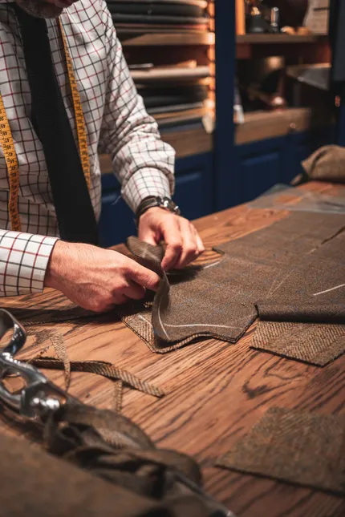

<!-- About -->
<div id="about" class="bg-zinc-950">
  <div class="py-32">
    <div class="mx-auto max-w-6xl px-8 text-gray-100 text-lg">
      <p class="text-3xl mb-4 font-serif text-white">Hello, I'm Paolo Rossi</p>
      <p class="mb-4">
        For over 50 years, our family has been at the forefront of the tailoring
        industry. We've seen trends come and go, but one thing has remained
        constant: our commitment to quality and craftsmanship.
      </p>
      <p class="mb-4">
        Our garments are made with the finest materials and sewn by skilled
        artisans who have been trained in the art of tailoring for generations.
        We take pride in our work and we're passionate about creating pieces
        that our customers will cherish for years to come.
      </p>
      <p class="mb-4">
        At Gentlemen Custom Tailor, we believe that clothing should be more than
        just functional. It should also be an expression of your personal style
        and taste. That's why we offer a wide range of custom options, so you
        can create a garment that's truly unique to you.
      </p>
      <p class="mb-4">
        Whether you're looking for a classic suit for a special occasion or a
        more casual piece for everyday wear, we have you covered. We'll work
        with you to understand your needs and create a garment that's perfect
        for you.
      </p>
      <p>
        So if you're looking for clothing that is both stylish and timeless,
        then we invite you to experience the difference of a multi-generational
        clothier.
      </p>
    </div>
    <div class="text-gray-300 max-w-6xl mx-auto my-8 bg-zinc-800 p-8 rounded-xl">
      <p class="text-gray-100 text-2xl pb-6">Our Legacy</p>
      <div class="grid grid-cols-3 gap-6 mx-8 lg:mx-0">
        <picture class="col-span-3 lg:col-span-1 mx-auto">
          <source srcset="man-sewing.94fceca7.webp" media="(min-width: 1024px)">
          <source srcset="man-sewing.e9358d0b.webp" media="(min-width: 768px)">
          <source srcset="man-sewing.b4f5d5be.webp" media="(min-width: 430px)">
          
        </picture>
        <div class="col-span-3 lg:col-span-2">
          <p class="mb-4">
            My father, Antonio Rossi, started Gentlemen Custom Tailor 50 years
            ago. He was born into a family of tailors, and he learned the craft
            from a young age. He showed a natural aptitude for the craft. He was
            passionate about creating custom garments that fit perfectly and
            flattered the wearer.
          </p>
          <p class="mb-4">
            Antonio loved the feel of the fabric in his hands, the precision of
            the needle and thread, and the satisfaction of creating a garment
            that fit perfectly and flattered the wearer. He dreamed of one day
            opening his own custom tailor shop, where he could share his passion
            with others.
          </p>
          <p class="mb-4">
            When my father was 20 years old, he saved up enough money to rent a
            small storefront in the heart of town. He named his shop "Gentlemen
            Custom Tailor," and he quickly began to attract customers with his
            attention to detail, commitment to quality, and personal touch.
          </p>
          <p class="mb-4">
            Antonio worked tirelessly in his shop, from dawn to dusk. He would
            spend hours meticulously measuring his customers and selecting the
            perfect fabrics. Then, he would carefully craft each garment, taking
            pride in every stitch.
          </p>
          <p class="mb-4">
            Antonio's reputation for excellence quickly spread throughout the
            town. Soon, he was dressing the most distinguished men and women in
            the area. He became known for his ability to create custom garments
            that were both stylish and flattering, and his customers appreciated
            his personal touch and his commitment to their satisfaction.
          </p>
          <p class="mb-4">
            Today, Antonio Rossi is a respected elder in the town. He is still
            active in his shop, and he is passing on his knowledge and skills to
            the next generation of tailors. Gentlemen Custom Tailor is now a
            multi-generational business, and it continues to be a source of
            pride for the town.
          </p>
          <p class="mb-4">
            Antonio Rossi's story is a testament to the power of hard work,
            dedication, and passion. He built a successful business from the
            ground up, and he created a legacy that will continue to inspire
            future generations of tailors.
          </p>
        </div>
      </div>
    </div>
    <div class="max-w-6xl text-gray-300 mx-auto px-8">
      <p class="text-gray-100 text-2xl py-6">About Me</p>
      <div class="grid grid-cols-3 gap-6">
        <div class="col-span-3 lg:col-span-2 order-2 lg:order-1">
          <p class="mb-4">
            Growing up, I spent most of my time in the shop. While other kids
            where out play ball, I was making shirts. My father taught me
            everything he knew about tailoring. I learned how to select the
            perfect fabrics, how to measure customers precisely, and how to sew
            each garment with care. I also learned how to build relationships
            with customers and how to create custom garments that reflect their
            unique style and personality.
          </p>
          <p class="mb-4">
            I am proud to carry on my father's legacy at Gentlemen Custom
            Tailor. We continue to offer the same high level of service and
            craftsmanship that he was known for. We also offer a wider range of
            services than ever before.
          </p>
          <p class="mb-4">
            We believe that everyone deserves to look and feel their best.
            That's why we are committed to creating custom garments that are
            both stylish and flattering. We also want our customers to have a
            positive and memorable experience when they come to Gentlemen Custom
            Tailor.
          </p>
          <p class="mb-4">
            If you are looking for a custom tailor shop that can create a
            garment that is truly unique to you, then Gentlemen Custom Tailor is
            the place for you. We invite you to visit our shop and experience
            the difference of a custom tailor shop that has been in business for
            over 50 years.
          </p>
        </div>
        <div class="col-span-3 lg:col-span-1 order-1 lg:order-2">
          
        </div>
      </div>
    </div>
  </div>
</div>
